Explore Frankfurt
A Brief History
Frankfurt developed as a free imperial city, a major trade fair center, the site of imperial elections and coronations, and later one of Germany's main financial capitals. The station, cathedral quarter, Romerberg, churches, museums, and river crossings show the city's mix of medieval core, bourgeois culture, constitutional history, and modern commerce.
Attractions Map
Top Sights & Activities
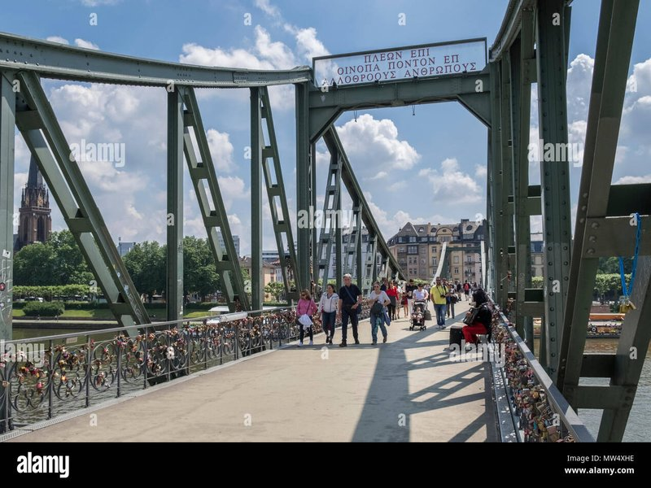
Frankfurt Hauptbahnhof
Frankfurt Hauptbahnhof opened in 1888 as one of Germany's largest 19th-century termini, with a neo-Renaissance facade and vaulted train shed. More than 450,000 passengers use the station daily, connecting the city to European rail networks. It remains the usual gateway from long-distance travel into the inner city.
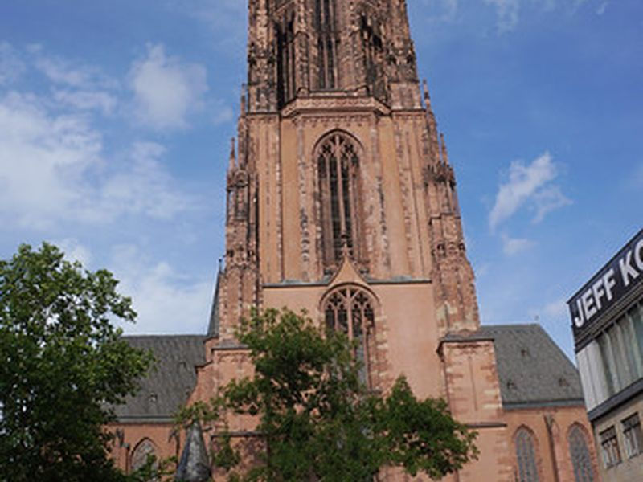
Frankfurt Cathedral
Frankfurt Cathedral, dedicated to St Bartholomew, was the coronation church of Holy Roman emperors from 1562 to 1792. The red sandstone tower and Gothic choir dominate the eastern old town. The election and coronation tradition linked Frankfurt's civic identity to imperial ceremony for over two centuries.
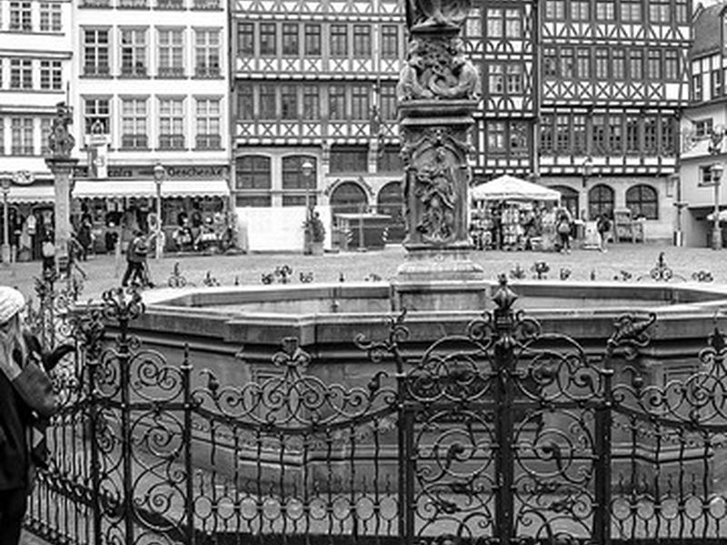
Römerberg
The Römerberg is Frankfurt's historic market square, lined with reconstructed half-timbered houses and the Justice Fountain. Imperial coronation feasts and medieval trade fairs once filled the space. Today it hosts markets and public events and forms the ceremonial heart of the rebuilt old town.
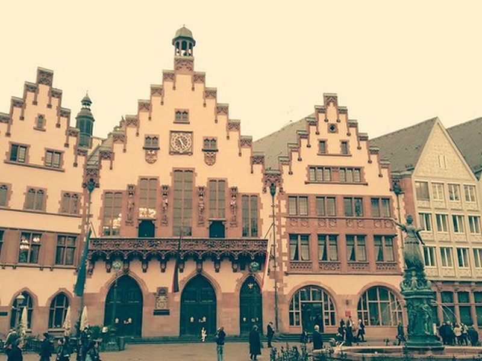
Frankfurter Römer
The Römer is Frankfurt's medieval town hall, with stepped gables acquired from the 15th century onward and council chambers used continuously for city government. The Kaisersaal hosted coronation banquets after imperial ceremonies in the cathedral. The complex remains a working seat of municipal administration and civic symbol.
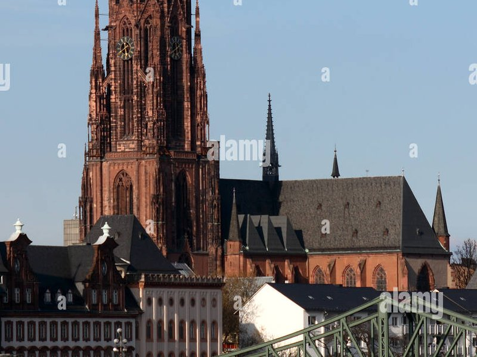
Old St Nicholas Church
The Old St Nicholas Church is a compact Gothic hall church on the Römerberg, documented from the 13th century. Its modest scale balances the civic facades of the square with an older parish presence. Services and concerts continue in a building closely tied to Frankfurt's market and town hall history.
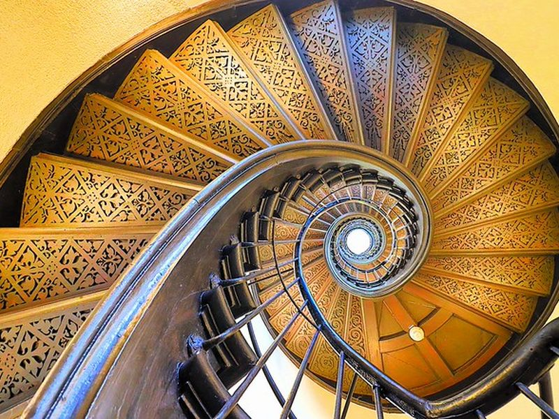
Historical Museum Frankfurt
The Historical Museum Frankfurt on the Saalgasse documents the city's development from medieval trade fair town to modern financial center. Permanent and temporary exhibitions cover the Romerberg, riverfront, and Jewish history. The riverside site helps connect the old core with wider social and commercial change.
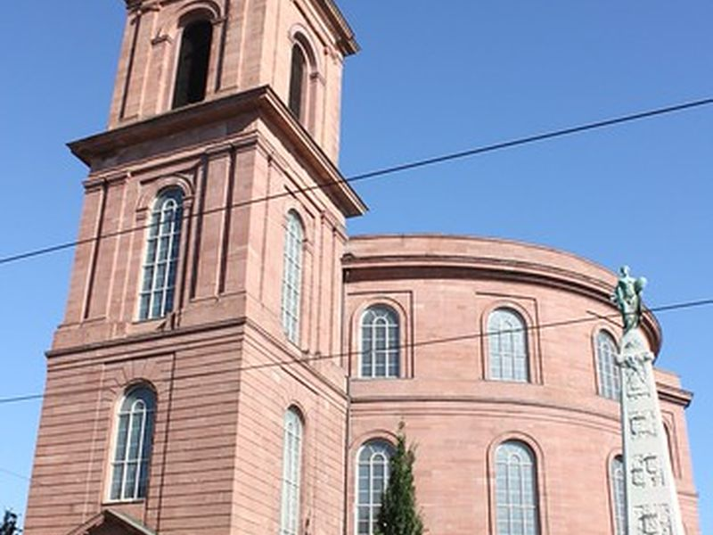
St. Paul's Church
St Paul's Church on Paulsplatz is a circular neoclassical building remembered for the Frankfurt Parliament of 1848, the first freely elected German national assembly. Though the church interior is modest, it serves as a monument to democratic constitutional history. Exhibitions explain the assembly and its failure to achieve unification.
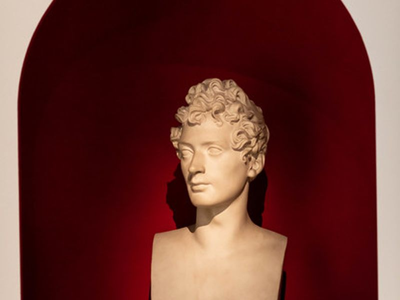
Frankfurter Goethe-Haus
The Goethe-Haus on Großer Hirschgraben reconstructs the 18th-century family home where Johann Wolfgang von Goethe was born in 1749 and spent his youth. Period rooms, furniture, and manuscripts illustrate Frankfurt bourgeois and literary culture. The museum ties the old town to the early life of Germany's most widely read writer.
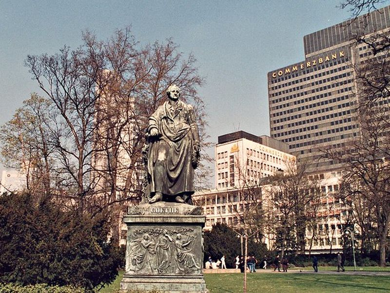
Goethe-Denkmal
The Goethe monument on Goetheplatz was erected in 1844 and shows the writer standing before allegorical figures of poetry and science. Public sculpture of this scale reflected Frankfurt's pride in its native author during the 19th century. The square links the memorial with nearby cultural institutions in the inner city.
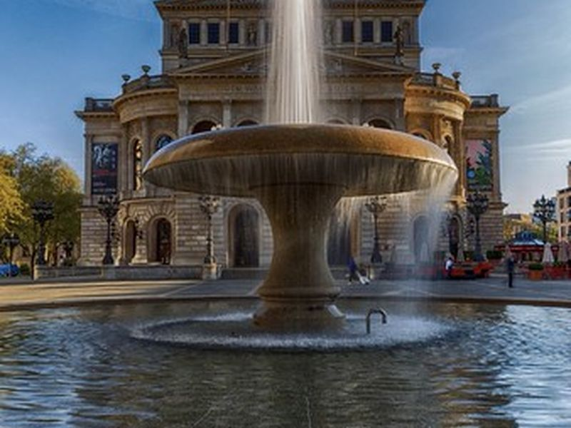
Alte Oper
The Alte Oper on Opernplatz opened in 1880 as Frankfurt's opera house in Renaissance revival style and was rebuilt after wartime damage, reopening in 1981. Concerts and events now use the hall rather than full opera seasons. The building anchors the western monumental axis of the inner city.
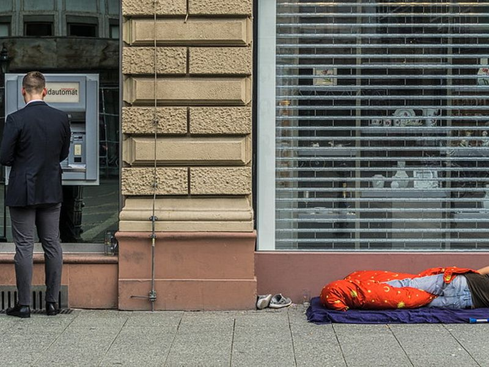
Große Bockenheimer Str.
Große Bockenheimer Straße, nicknamed Fressgass for its food shops and restaurants, runs between Opernplatz and Eschenheimer Tor. Delicatessens, wine bars, and cafés line a street that developed as a bourgeois shopping route west of the medieval core. It represents the commercial Frankfurt beyond the ceremonial old town.
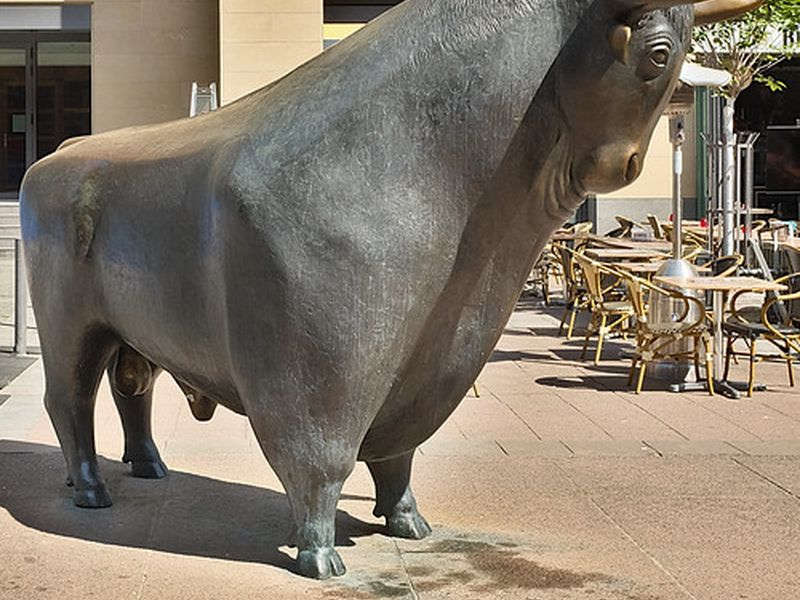
Bulle & Bär
The Bull and Bear bronze sculptures by Reinhard Dachlauer stand outside the Frankfurt Stock Exchange on Börsenplatz, installed in 1988. The figures symbolize rising and falling markets and mark the city's role as a European financial center. The small square remains a reference point in discussions of Frankfurt's economy.
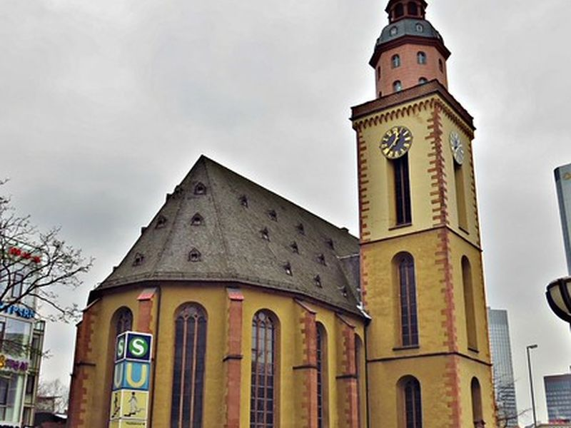
St. Catherine's Church
St Catherine's Church on the Hauptwache is a Gothic hall church rebuilt after wartime loss and serves as the main Protestant parish church of the inner city. Its tower rises beside one of Frankfurt's busiest transport and shopping nodes. The building preserves an older religious presence amid modern retail and offices.
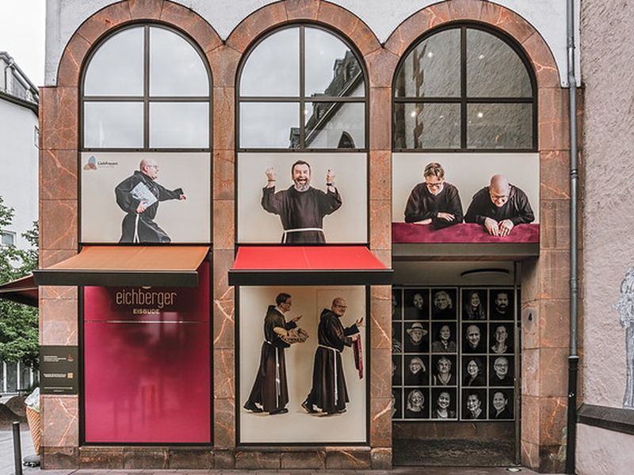
Liebfrauen, Frankfurt
Liebfrauen is a Gothic city church on Liebfrauenberg with a courtyard that offers quiet space in the dense commercial center. Devotional traditions and parish life continue beside banking and retail districts. The church provides a counterpoint to the office blocks and shops of the surrounding blocks.
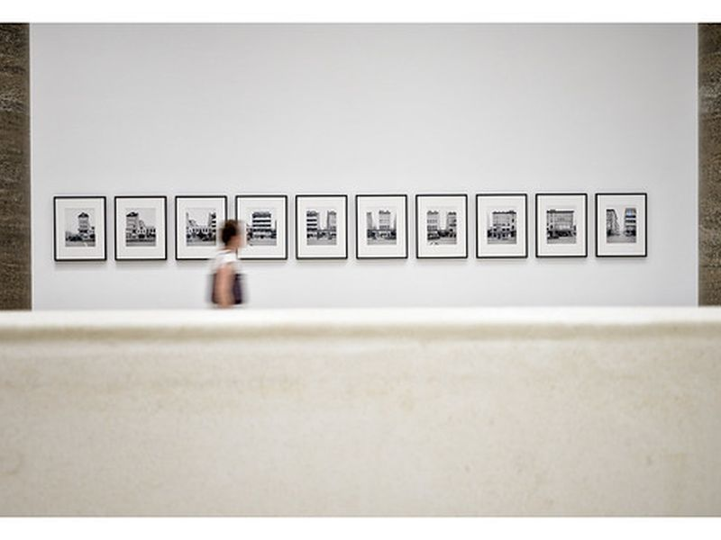
Städel Museum
The Städel Museum on the Museumsufer holds European paintings from the 14th century to the present, including works by Dürer, Rembrandt, and Monet. Founded in 1815 by banker Johann Friedrich Städel, it anchors Frankfurt's museum row on the south bank of the Main. The collection connects civic patronage with international art history.
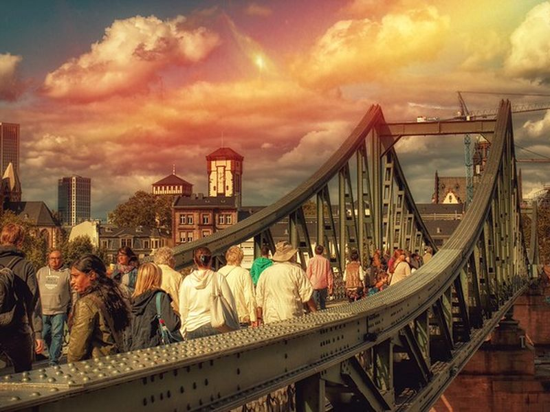
Eiserner Steg
The Eiserner Steg is a pedestrian iron bridge across the Main, first built in 1869 and rebuilt after the war. Views from the bridge take in the cathedral, Römer, and modern skyline. It links the historic north bank with the Museumsufer and Sachsenhausen promenades on the south side.